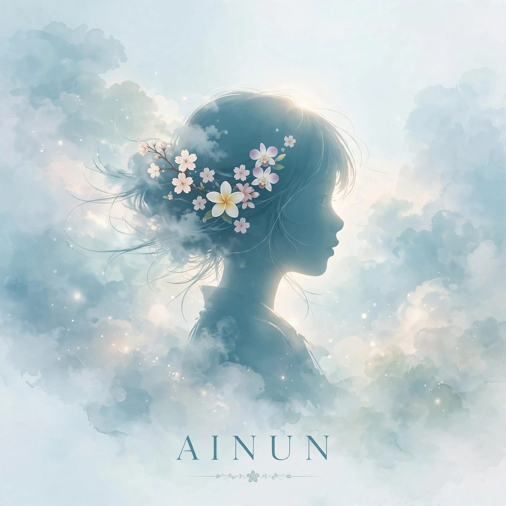

my ainun - money is enough มีเงินแล้วสบาย
Upload mp3 lewat Github aja, file di folder yang sama, otomatis nyambung lirik
Pilih lagu di atas
My Ainun • Klik judul lagu untuk lihat lirik lengkap & otomatis play
Klik salah satu lagu di atas untuk mulai...
0:00
0:00
🔀
Acak: Off
🔂
Ulang 1
⏮
▶
⏭
🔁
Ulang Semua
🔊